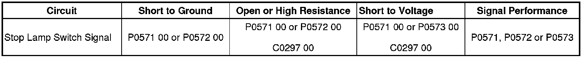

P0573
DTC P0571-P0573
Diagnostic Instructions
* Perform the Diagnostic System Check - Vehicle (Initial Inspection and Diagnostic Overview) prior to using this diagnostic procedure.
* Review Strategy Based Diagnosis (Initial Inspection and Diagnostic Overview) for an overview of the diagnostic approach.
* Diagnostic Procedure Instructions (Initial Inspection and Diagnostic Overview) provides an overview of each diagnostic category.
DTC Descriptor
DTC P0571 00
- Cruise Control Brake Switch Circuit
Diagnostic Fault Information

Circuit/System Description
The stop lamp switch signal circuit is a high voltage input from the body control module (BCM) to the engine control module (ECM) and the transmission control module (TCM). The ECM monitors the stop lamp switch circuit to detect when the brake pedal has been applied. The BCM monitors the brake pedal position sensor to determine when the brake pedal is applied. When the brake pedal is applied, the BCM supplies a high voltage signal on the stop lamp switch signal circuit and also sends a serial data message to the ECM indicating that the brake pedal has been applied. The ECM senses a high voltage signal on the stop lamp switch signal circuit when the brake pedal has been applied.
Conditions for Running the DTC
* The ignition is ON.
* The engine is running.
* Battery voltage is greater than 11.5 volts.
Conditions for Setting the DTC
The ECM detects either a low voltage signal on the stop lamp switch signal circuit when the serial data message from the BCM indicates the brakes are applied, or a high voltage signal on the stop lamp switch signal circuit when the serial data message from the BCM indicates the brakes are not applied.
Action Taken When the DTC Sets
* The cruise control system becomes inoperative.
* The ECM stores the DTC to memory.
* The ECM will record the operating conditions at the time the diagnostic failed. The ECM stores this information in Failure Records.
Conditions for Clearing the DTC
* A last test failed, or the current DTC, clears when the diagnostic runs and does not fail.
* A history DTC clears after 40 consecutive warm-up cycles, if failures are not reported by this or any other emission related diagnostic.
Reference Information
Schematic Reference
Exterior Lights Schematics (Exterior Lights Schematics)
Connector End View Reference
Component Connector End Views (Connector Views)
Description and Operation
Cruise Control Description and Operation (Description and Operation)
Electrical Information Reference
* Circuit Testing (Component Tests and General Diagnostics)
* Connector Repairs (Component Tests and General Diagnostics)
* Testing for Intermittent Conditions and Poor Connections (Component Tests and General Diagnostics)
* Wiring Repairs (Component Tests and General Diagnostics)
Scan Tool Reference
Control Module References (Programming and Relearning)
Circuit/System Verification
Inspect for proper operation of the stop lamps. Refer to Exterior Lighting Systems Description and Operation (Exterior Lighting Systems Description and Operation) .
Circuit/System Testing
1. Ignition ON, verify that the Stoplamp Pedal Switch parameter in the ECM reads Applied while depressing the brake pedal.
• If the parameter reads Released, test the stop lamp switch signal circuit for a short to ground or an open/high resistance. If the circuit tests normal, replace the ECM.
2. Ignition ON, release the brake pedal, verify that the Stoplamp Pedal Switch parameter reads Released.
• If the parameter reads Applied, test the stop lamp switch signal circuit for a short to voltage. If the circuit tests normal, replace the BCM.
3. If all circuits test normal, replace the ECM.
Repair Instructions
Perform the Diagnostic Repair Verification (Verification Tests) after completing the diagnostic procedure.
Control Module References (Programming and Relearning) for ECM or BCM replacement, setup, and programming